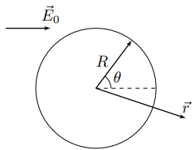
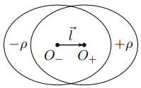
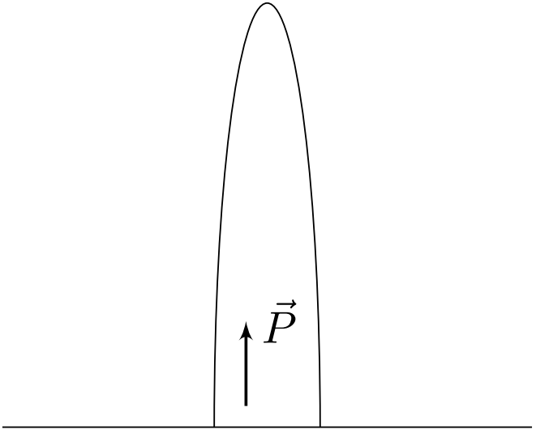
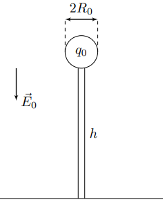
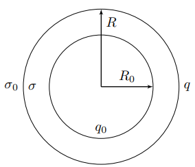

X24 (2024) — English translation
The phenomena of atmospheric electricity can be seen by anyone in everyday life. Each of us, although afraid, still admires the beauty of lightning appearing in the sky, or watches with delight the sparks in the air. As part of this task, you are invited to take a closer look at the electrical phenomena that occur in the atmosphere.
The first thought that arises about the charge of raindrops is that when they fall, they retain the same charge that they carried inside the clouds, that is, on average, equal to zero. Experience shows that this assumption is incorrect, and the average charge of drops falling on the Earth’s surface is positive. This part of the problem is devoted to the explanation and quantitative analysis of this phenomenon.
You probably know Ohm's law in differential form: $$\vec{j}=\sigma\vec{E}{,} $$где $\vec{j}$ и $\vec{E}$ – плотность тока и напряжённость электростатического поля в среде, а $\sigma$ – величина, обратная удельному сопротивлению и называющаяся проводимостью. В атмосферном воздухе величина плотности тока обусловлена движением положительно и отрицательно заряженных ионов, движение которых происходит независимо друг от друга, в силу чего можно написать: $$\vec{j}=\vec{j}_++\vec{j}_-{,} $$где $\vec{j}_+$ и $\vec{j}_-⟦ M8⟧\vec{E}$, поэтому закон Ома в дифференциальной форме для атмосферы записывается следующим образом: $$\vec{j}=\sigma_+\vec{E}+\sigma_-\vec{E}{.} $$Здесь $\sigma_+$ характеризует плотность тока, обусловленную движением положительно заряженных ионов, а $\sigma_-$ – плотность тока, обусловленную движением отрицательно заряженных ионов. При этом $\sigma_+$ и $\sigma_-⟦ M15⟧\sigma_+$ и $\sigma_-$ следует, что положительно заряженные ионы движутся вдоль направления электрического поля, а отрицательно заряженные ионы – противоположно ему. Разница между положительно и отрицательно заряженными ионами в атмосфере заключается не только в отличии знаков их зарядов, но и в их концентрациях. В Земной атмосфере преобладают положительные ионы, поэтому для неё всегда будем считать выполненным соотношение: $$\sigma_+{>}\sigma_-{.} $$
Перейдём непосредственно к постановке задачи. Водяная капля, которую можно считать проводящим шаром радиусом $R$, расположена в направленном вертикально вниз электростатическом поле напряжённостью $\vec{E}_0$. Капля движется в атмосфере с положительными и отрицательными ионами, проводимости которых равны $\sigma_+⟦M22 ⟧\sigma_-$ соответственно. Глобальной целью данной части задачи является нахождение стационарного заряда капли $Q_0$. При достаточно быстром падении капли по отношению к окружающему воздуху изменение заряда шара обусловлено только движением ионов к поверхности капли.
Перейдём непосредственно к постановке задачи. Водяная капля, которую можно считать проводящим шаром радиусом $R$, расположена в направленном вертикально вниз электростатическом поле напряжённостью $\vec{E}_0$. Капля движется в атмосфере с положительными и отрицательными ионами, проводимости которых равны $\sigma_+$ и $\sigma_-$ соответственно. Глобальной целью данной части задачи является нахождение стационарного заряда капли $Q_0$. If the drop falls quickly enough relative to the surrounding air, the change in the charge of the ball is due only to the movement of ions towards the surface of the drop.

When solving, use the following model: When falling, a drop always retains the shape of a sphere with radius $R$; The magnitude and direction of the electrostatic field $\vec{E}_0$ remain constant throughout the entire fall of the drop; The charge of a drop changes only when it comes into contact with positively and negatively charged ions, and the charges already on the surface of the drop never leave it.
When solving, use the following model:
Let $\vec{n}$ be the normal vector to the surface of the ball, directed outward.
Let's move on to analyzing the change in the charge of the ball. Consider some element of its surface $dS$ with a normal vector $\vec{n}$. If at the considered point on the surface of the ball the electrostatic field strength is equal to $\vec{E}$, then per unit time a charge $dq/dt$ is received on this surface area, equal to: $$\cfrac{dq}{dt}=\begin{cases} -\sigma_-E_ndS\quad\text{при}\quad E_n{>}0\\ -\sigma_+E_ndS\quad\text{при}\quad E_n{<}0 \end{cases} $$Совпадение знаков в обоих случаях обусловлено тем, что при $E_n{>}0$ на поверхность шара попадают отрицательные ионы, а при $E_n{<}0$ - positive.
Let $\Delta{Q}=Q-Q_0$ be the deviation of the ball charge from the stationary one. At the moment of time $t=0$ the deviation of the ball charge from the stationary one was $\Delta{Q}_0=Q(0)-Q_0$, and $|\Delta{Q}_0|\ll{Q}_0$.
Next we will study a complex of phenomena called thunderstorms. It covers a whole range of issues related to both thunderstorm discharges, that is, lightning, and glow discharges associated with the corona of pointed objects.
Let us consider the issue of an anomalous increase in the strength of the electrostatic field near pointed objects. Let the conductor be an elongated ellipsoid of revolution, given by the equation: $$\cfrac{z^2}{a^2}+\cfrac{x^2+y^2}{b^2}=1{.} $$Здесь $a$ и $b$ обозначают большую и малую полуоси эллипсоида соответственно. Ось $z$ эллипсоида ориентирована параллельно внешнему однородному электростатическому полю напряжённостью $\vec{E}_0$, направленному вертикально вниз. Можно показать, что напряжённость $\vec{E}$ электрического поля внутри изолированного равномерно заряженного по объёму эллипсоида вращения зависит линейно от координат $x{,}y{, }z$: $$\vec{E}=\cfrac{\rho}{\varepsilon_0}\left(Az\vec{e}_z+B(x\vec{e}_x+y\vec{e}_y)\right){.} $$Здесь $A$ и $B$ $$A=\left(\cfrac{b}{c}\right)^2\left(\cfrac{a}{c}\cdot\ln\cfrac{a+c}{b}-1\right)\qquad B=\cfrac{a}{2c}\left(\cfrac{a}{c}-\left(\cfrac{b}{c}\right)^2\ln\cfrac{a+c}{b}\right){,} $$где $c=\sqrt{a^2-b^2}⟦M14 ⟧b\ll{a}$, то указанные выражения можно приблизить следующими: $$A\approx \left(\cfrac{b}{a}\right)^2\left(\ln\cfrac{2a}{b}-1\right)\qquad B\approx\cfrac{1}{2}\left(1-\left(\cfrac{b}{a}\right)^2\ln\cfrac{2a}{b}\right) $$Далее во всех пунктах, требующих подстановки $A$, используйте приближённое выражение.
Задача о помещении проводящего эллипсоида в однородное электрическое поле, направленное параллельно его оси $z$, может быть решена аналогично задаче для проводящего шара: Рассмотрим два эллипсоида с совпадающей осью $z$, несущих заряды с постоянными плотностями $\rho$ и $-\rho $. Центр положительного эллипсоида имеет радиус–вектор $\vec{l}$ относительно центра отрицательно заряженного эллипсоида.
Задача о помещении проводящего эллипсоида в однородное электрическое поле, направленное параллельно его оси $z$, может быть решена аналогично задаче для проводящего шара: Рассмотрим два эллипсоида с совпадающей осью $z$, несущих заряды с постоянными плотностями $\rho$ и $-\rho$. Центр положительного эллипсоида имеет радиус–вектор $\vec{l}$ relative to the center of a negatively charged ellipsoid.

If the distance $l$ between the centers of the ellipsoids tends to zero, then their combination can be considered as one ellipsoid with a constant polarization vector $\vec{P}$.
Let us consider an uncharged conducting ellipsoid placed in a uniform electrostatic field of intensity $\vec{E}_0$, directed along the axis $z$ of the ellipsoid.
Let us consider half of an ellipsoid uniformly polarized along the $z$ axis as shown in the figure below. With its equatorial cross-section it is in contact with an infinite conducting plane.

The above reasoning can be used when studying a real structure: Let us consider a conductor in the form of half an elongated ellipsoid of revolution with semi-axes $a = 1\text{км}$ and $b = 1\text{мм}$, resting with its equatorial cross-section on the horizontal surface of the Earth, which can also be considered conductive. In the atmosphere, at a great distance from the ellipsoid, there is a vertically downward electrostatic field of strength $E_0 = 100 \text{В}/\text{м}$.
Using a design similar to that considered in part $\mathrm{B}$ of the problem, it is possible to achieve the extraction of electric charge from the atmosphere. In this part of the problem, the conductivity of atmospheric air under normal conditions is equal to $\sigma_0$, and the effects described in part $\mathrm{A}$ of the problem can be neglected. Consider a conducting ball of radius $R_0$ connected to the Earth by a long thin straight wire of length $h \gg R_0$. Consider the radius of the wire small compared to $R_0$. The electrostatic field in the Earth's atmosphere can be assumed to be constant, directed vertically downward and equal to $E_0$.

From the results obtained in the previous paragraphs of parts $\mathrm{B}$ and $\mathrm{C}$ it is clear that the magnitude of the electrostatic field strength near the surface of the conductor can reach quite large values, which leads to ionization of the layers of air closest to it and a strong increase in their conductivity. To take this effect into account, we will assume that the conducting ball is located inside a spherical shell with internal and external radii $R_0$ and $R$, respectively, in which ionized air with conductivity $\sigma$ is located. At distances $r{>}R$ from the center of the ball, the conductivity remains equal to $\sigma_0$. Consider the distribution of charges in the medium to be stationary, so that at any point in space the charge density remains constant. In this system, the charge is located only on spherical surfaces with radii $R_0$ and $R$, and on the surface with radius $R_0$ the total charge is $q_0$, and on the surface with radius $R$ – $q$ (see figure).
From the results obtained in the previous paragraphs of parts $\mathrm{B}$ and $\mathrm{C}$ it is clear that the magnitude of the electrostatic field strength near the surface of the conductor can reach quite large values, which leads to ionization of the layers of air closest to it and a strong increase in their conductivity. To take this effect into account, we will assume that the conducting ball is located inside a spherical shell with internal and external radii $R_0$ and $R$, respectively, in which ionized air with conductivity $\sigma$ is located. At distances $r{>}R$ from the center of the ball, the conductivity remains equal to $\sigma_0$. Consider the distribution of charges in the medium to be stationary, so that at any point in space the charge density remains constant. In this system, the charge is located only on spherical surfaces with radii $R_0$ and $R$, and on the surface with radius $R_0$ the total charge is equal to $q_0$, and on the surface with radius $R$ – $q$ (see figure).

We investigate the formation and development of a lightning discharge. As an example, consider the mechanism of lightning formation from the tip considered in the $\mathrm{B}$ part of the problem. A conductor can create a strong electrostatic field near itself, causing ionization of the air. Ionized air behaves as a conductor for a relatively long time, since the process of recombination of ions in it occurs slowly. As a result of this, the conducting region of space will grow until the electrostatic field is sufficient for ionization. If the conducting region (spark channel) formed in this way connects the clouds and the surface of the Earth, then a very large electric current can flow through it. This part of the problem is devoted to estimating the rate of formation of the spark channel. It was experimentally found that it is approximately equal to the speed of movement of free electrons at the boundary of the conducting region, where the field strength is equal to the critical value $E_\text{пр}$ at which ionization occurs.
The proposed model of the phenomenon is as follows: In the atmospheric region there are electrons with a charge $-e$, the mass of which is equal to $m$. Also in the atmosphere there are neutral air molecules, the mass $M$ of which is many times greater than the mass of electrons, i.e. $M\gg{m}$. Under the influence of an electrostatic field, electrons become accelerated and collide with air molecules, and the average distance traveled by electrons between two successive collisions with air molecules is $\lambda$. The quantity $\lambda$ is called the free path. In this case, air molecules can always be considered motionless. The average kinetic energy of thermal motion of electrons is equal to $\overline{W}$ and is so great that between two successive collisions there is practically no time to change. Consider that the value $\overline{W}$ is related to the average value of the speed of thermal motion of electrons $\overline{v}_\text{т}$ by the relation: $$\overline{W}=\cfrac{m\overline{v}^2_\text{т}}{2}{.} $$Вся данная конструкция расположена в однородном электрическом поле $\vec{E}$, направленном противоположно скорости распространения искрового канала.
Средний вектор тепловой скорости теплового движения электронов равен нулю: $$\langle\vec{v}_\text{т}\rangle=0{.} $$Тогда среднее перемещение электронов в направлении электростатического поля за время $\tau=\lambda/\overline{v}_\text{т}$, соответствующее характерному времени движения электрона между двумя последовательными столкновениями с молекулами воздуха, составляет: $$\langle\vec{S}\rangle=\langle\vec{v}_\text{т}\rangle\tau+\vec{a}\tau^2/2=\vec{a}\tau^2/2\Rightarrow \vec{u}=\cfrac{\langle\vec{S}\rangle}{\tau}=\cfrac{\vec{a}\tau}{2}{.} $$Вектор $\vec{u}$ is called the average electron drift velocity in electrostatic field. This value is equal to the speed of propagation of the spark channel.
When the average value of the kinetic energy of thermal motion of electrons reaches a stationary value $\overline{W}$, the average power of loss of kinetic energy of electrons when colliding with air molecules is compensated by the work of the electric field to move electrons.
The quantity $\overline{\Delta{W}}$ can also be found directly from collision analysis.
To determine the value of $\overline{\Delta W}$ we accept the following model: All collisions occurring between electrons and air molecules are elastic; Initially, an air molecule with mass $M$ is at rest, and the kinetic energy of an electron with mass $m$ incident on it is always equal to $\overline{W}$; In the reference frame of the center of mass of the considered system of two particles, all directions of the speed of an air molecule immediately after a collision with an electron are equally probable. Let $\varphi$ be the angle between the velocity vector of the incident electron and the velocity of the air molecule in the reference frame of the center of mass immediately after the collision. Then, since all directions of the speed of an air molecule in the reference frame of the center of mass are equally probable, the average value of the electron kinetic energy loss is determined by the expression: $$\overline{\Delta W}=\cfrac{1}{4\pi}\int_{\Omega}E_k(\varphi)d\Omega{,}$$ где $E_k(\varphi)$ – кинетическая энергия в лабораторной системе отсчёта молекулы воздуха, сразу после столкновения движущейся в направлении угла $\varphi$ в системе отсчёта центра масс, а $d\Omega=2\pi\sin\varphi d\varphi$ – телесный угол, под которым виден сегмент поверхности сферы между углами $\varphi$ и $\varphi+d\varphi$.
Пусть $\varphi$ – угол между вектором скорости налетающего электрона и скоростью молекулы воздуха в системе отсчёта центра масс сразу после столкновения. Тогда, поскольку все направления скорости молекулы воздуха в системе отсчёта центра масс равновероятны, среднее значение потерь кинетической энергии электрона определяется выражением:
$$\overline{\Delta W}=\cfrac{1}{4\pi}\int_{\Omega}E_k(\varphi)d\Omega{,}$$
где $E_k(\varphi)$ – кинетическая энергия в лабораторной системе отсчёта молекулы воздуха, сразу после столкновения движущейся в направлении угла $\varphi$ в системе отсчёта центра масс, а $d\Omega=2\pi\sin\varphi d\varphi$ – телесный угол, под которым виден сегмент поверхности сферы между углами $\varphi$ и $\varphi+d\varphi$.
Consider the following data known: Electron charge $-e=-1{.}6\cdot 10^{-19}~\text{Кл}$; Electron mass $m=9{.}1\cdot 10^{-31}~\text{кг}$; Mass of an air molecule $M\approx 6\cdot 10^4~m$; The critical electrostatic field strength at which breakdown occurs is $E_\text{пр}=30~\text{кВ}/\text{см}$; Average free path $\lambda\approx 1~\text{мкм}$.
Consider the following information known:
Source: https://pho.rs/p/3703